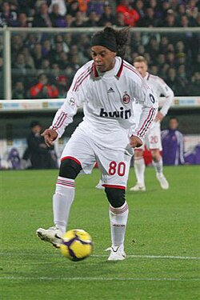
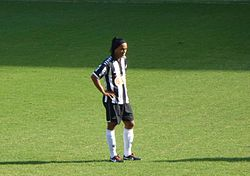
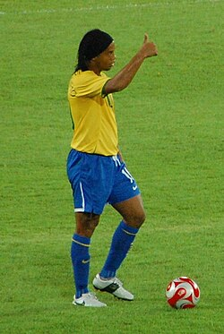

Contenidos
Ronaldo de Assis Moreira (Porto Alegre, Río Grande del Sur, 21 de marzo de 1980) conocido como Ronaldinho Gaúcho (en portugués brasileño: /ʁonawˈdʒĩɲu gaˈuʃu/ o simplemente Ronaldinho, es un exfutbolista brasileño que jugaba como centrocampista o delantero, siendo mundialmente reconocido como uno de los jugadores y talentos más grandes en la historia del fútbol.
Destacó por su gran técnica, habilidad y calidad a la hora de controlar el balón, por la precisión en sus pases y tiros libres, así como por sus regates. Era conocido por improvisar jugadas, entre ellas la «elástica», la «vaselina o sombrero», el «autopase», la «bicicleta», la «cola de vaca» o la «espaldinha».
Ronaldinho inició su carrera con Grêmio en 1998. En el año 2000, a los 20 años, se mudó al Paris Saint-Germain en Francia antes de fichar por el F. C. Barcelona en 2003. En su segunda temporada con el Barcelona, ganó el título de La Liga 2004-05 y la Supercopa Española. La temporada que siguió se considera una de las mejores de su carrera, ya que fue una pieza fundamental para que el Barcelona ganara la Liga de Campeones de la UEFA 2005-06, evalidar el título de La Liga y ganar nuevamente la Supercopa de España, lo que le dio a Ronaldinho el primer doblete de su carrera. Después de un segundo puesto en La Liga ante el Real Madrid en la temporada 2006-07 y una temporada 2007-08 plagada de lesiones, Ronaldinho sufrió un declive en sus actuaciones, a menudo atribuido a una disminución en la dedicación y el enfoque después de haber logrado tanto en el deporte, y en el verano europeo del 2008 partió de Barcelona para unirse al A. C. Milan, donde ganó la Serie A 2010-11. Regresó a Brasil para jugar en Flamengo en 2011 y en Atlético Mineiro un año después, donde ganó la Copa Libertadores 2013, antes de mudarse a México para jugar en Querétaro y luego de regreso a Brasil para jugar en Fluminense en 2015.
Ronaldinho fue reconocido como el mejor jugador del mundo por la FIFA al ganar el Jugador Mundial de la FIFA (FIFA World Player) en 2004 y 2005. También recibió el título de 'Rey de Europa' tres veces seguidas (2004-2006) con el F. C. Barcelona, y fue nombrado 'Rey de América' en 2013 con el Atlético Mineiro. Obtuvo el Balón de Oro en 2005 por France Football y el premio World Soccer Magazine en 2004 y 2005. La revista World Soccer también lo declaró el mejor futbolista de la primera década del siglo XXI. Fue incluido tres veces tanto en el Equipo del Año de la UEFA como en el FIFA/FIFPro World XI, y nombrado Futbolista de Clubes del Año de la UEFA en 2005-06.
Brasil, Ronaldinho jugó 102 partidos y anotó 35 goles, participando en dos Copas Mundiales de la FIFA. Debutó ganando la Copa América 1999 y fue clave en el equipo campeón de la Copa Mundial de la FIFA 2002, formando un trío ofensivo con Ronaldo y Rivaldo, y fue incluido en el Equipo de Estrellas del torneo. Como capitán, lideró a Brasil al título en la Copa FIFA Confederaciones 2005, siendo elegido mejor jugador del partido en la final. También dirigió a la selección olímpica hacia la medalla de bronce en los Juegos Olímpicos de Pekín 2008. Comparte con Cuauhtémoc Blanco el récord de máximo goleador de la Copa Confederaciones, con 9 goles.

Ronaldinho se convirtió en el sexto futbolista de la historia en ganar la UEFA Champions League y la Copa Libertadores, tras alcanzar este último con el Atlético Mineiro. También aparece en la lista FIFA 100, que incluye a los 125 mejores jugadores de todos los tiempos. Asimismo, es el único futbolista de la historia en ganar seis de los títulos más importantes: Copa Mundial de la FIFA, Copa FIFA Confederaciones, Copa América, Copa Libertadores, Liga de Campeones de la UEFA y Balón de Oro.
El 16 de enero de 2018, Ronaldinho anunció su retiro del fútbol profesional de manera oficial a sus 37 años, con lo cual finalizó una dinastía del máximo expositor del llamado Jogo Bonito. Se retiró como el único jugador en la historia capaz de haber obtenido la Copa del Mundo, Liga de Campeones, Copa Libertadores y Balón de Oro. También el único si sumamos la Copa América y la Copa Confederaciones. El 17 de octubre de 2019 jugó un partido amistoso en el Estadio Nemesio Camacho El Campín entre Independiente Santa Fe y Atlético Nacional celebrando la despedida de Ronaldinho.
El 14 de diciembre de 2020 fue incluido como extremo izquierdo en el segundo Dream Team histórico del Balón de Oro.
Trayectoria
Es el tercer jugador de la historia en ganar al menos una vez los torneos más importantes de selecciones, clubes europeos y clubes americanos respectivamente (es decir: la Copa Mundial de Fútbol, la Champions League, y la Copa Libertadores de América) después de Cafú y Roque Junior, pero de ellos, es el único que ganó un Balón de Oro. También ganó una Copa América y una Copa Confederaciones, entre otros títulos. Se podría decir que de los títulos más prestigiosos del fútbol, sólo le faltó el Mundial de Clubes (de los premios FIFA) y tal vez la medalla de oro olímpica.
Grêmio de Porto Alegre
La carrera de Ronaldinho comenzó con la cantera del Grêmio. Hizo su debut en la selección absoluta durante la Copa Libertadores de 1998.
1999 vio el surgimiento de Ronaldinho, de 18 años, con 22 goles en 47 partidos, y fue titular en derbis contra el Internacional, sobre todo el 20 de junio de 1999 en la final del Campeonato Estatal de Rio Grande do Sul. En una actuación ganadora, Ronaldinho avergonzó a la leyenda brasileña de Internacional y al capitán ganador de la Copa del Mundo de 1994, Dunga, lanzando el balón por encima de su cabeza en una ocasión y dejándolo con los pies planos en un regate laberíntico en otra. Ronaldinho logró más éxitos con Grêmio, ganando la Copa Sul-Minas inaugural.
En 2001, el Arsenal expresó su interés en fichar a Ronaldinho, pero la movida fracasó después de que no pudo obtener un permiso de trabajo por ser un jugador extracomunitario que no había jugado suficientes partidos internacionales. Consideró jugar cedido con el St Mirren de la Premier League escocesa, lo que nunca sucedió debido a su participación en un escándalo de pasaporte falso en Brasil.
París Saint-Germain
El 17 de enero de 2001, el equipo francés del París Saint-Germain anuncia el fichaje del jugador. Este traspaso fue muy polémico, ya que parece ser que Grêmio no dio la aprobación para que el jugador firmara por otro equipo. El caso llegó a la FIFA, que dictaminó que el club brasileño debería recibir 5 millones de dólares.
En lo deportivo, mostró sus habilidades en dos temporadas, donde incluso llegó a la final de la Copa de Francia, que no ganó tras caer ante el Auxerre.
FC Barcelona
La llegada
La última temporada del jugador brasileño en Francia estaba marcada por los incesantes rumores en torno a su traspaso hacia un gran club europeo. Finalmente, en julio de 2003, se hizo pública la venta del jugador al F. C. Barcelona por una cuantía de 24 millones de euros. El brasileño firmó un contrato de cinco años a razón de 3 millones de euros netos por temporada.
Su de but se produjo en el triunfo de su equipo ante el Athletic Club, por un resultado de 0-1. Su primer gol oficial como azulgrana lo marcó en la segunda jornada, ante el Sevilla en el Camp Nou, con un espectacular disparo desde 25 metros. Los gritos de júbilo de los aficionados azulgranas tras este gol fueron de tal intensidad que llegaron a ser registrados por los sismógrafos de Barcelona.
En su primera temporada (2003-04) el equipo logró el subcampeonato, acabando por detrás del Valencia C. F., y Ronaldinho marcó 15 goles en 32 partidos de liga. Ese mismo año, el jugador recibió por parte de la FIFA el premio al mejor jugador del año (FIFA World Player).
Estrella mundial
Rápidamente, el jugador fue adquiriendo el estatus de ídolo entre la afición culé, situándose junto a otros jugadores brasileños que pasaron por el F. C. Barcelona como Romario, Ronaldo o Rivaldo. Recibió en 2005 el Balón de Oro y el trofeo FIFA World Player, imponiéndose en ambos al centrocampista del Chelsea FC, Frank Lampard, y coronándose como el mejor jugador mundial de entonces.
En la temporada 2004-2005, el F. C. Barcelona se proclamó campeón de la liga de la mano del astro brasileño, que anotó nueve goles y fue decisivo al final de la campaña. En competición europea, el Barcelona fue eliminado de la Champions League a manos del Chelsea FC. Encumbrado en la cima del fútbol mundial, Ronaldinho amplió su contrato con el Barcelona hasta el año 2010, dentro de la estrategia del presidente Joan Laporta de garantizar la continuidad de los jugadores claves del equipo, entre los que por supuesto estaba el brasileño, además de Víctor Valdés, Carles Puyol, Xavi Hernández, Deco o Samuel Eto'o.
En la temporada 2005-2006, el F. C. Barcelona conquistó la Supercopa de España, la Liga española y la Liga de Campeones de la UEFA. Ronaldinho fue clave en estos éxitos, destacando especialmente en un partido contra el Real Madrid CF en el Estadio Santiago Bernabéu, donde anotó dos goles y fue ovacionado por la afición rival. Marcó 17 goles en la liga y fue nombrado mejor jugador de la Liga de Campeones, en la que aportó 7 goles y 4 asistencias, logrando su única Champions en su carrera.
Declive
En la temporada 2006-2007 el Barcelona no consigue reeditar sus éxitos y acaba sin títulos. Lo impiden una grave lesión del goleador camerunés Samuel Eto'o y un agudo descenso del rendimiento de los jugadores en el tramo final de la temporada, faltando en partidos clave. Pese a estas circunstancias, Ronaldinho se erige en goleador del conjunto azulgrana con 21 goles, su máxima cifra en la Liga.
El 27 de agosto de 2007 juró la constitución española obteniendo la doble nacionalidad y liberando así una plaza de extracomunitario en la plantilla azulgrana, permitiendo al club incorporar más un jugador no europeo.
El rendimiento de Ronaldinho bajó en la temporada 2007-2008. Su baja condición física, provocada por la constante actividad nocturna, le hicieron perder el nivel de juego. Ronaldinho acaba perdiendo la titularidad en favor del recién llegado delantero francés Thierry Henry. En abril de 2008, una nueva lesión terminó de apartar definitivamente al jugador del equipo. Pese a este bajón y a no ser un delantero neto, acabó jugando 204 partidos oficiales y marcando 95 goles en sus cinco temporadas con el F. C. Barcelona.

A. C. Milan
En junio de 2008 Pep Guardiola reemplazó a Rijkaard en el banquillo del F. C. Barcelona y, en su presentación, anunció públicamente que no contaba con varios jugadores de la plantilla, entre ellos, Ronaldinho, Eto'o y Deco. Tras largas negociaciones del club catalán con el Manchester City y el AC Milan, finalmente fue el conjunto rossonero quien se hizo con el traspaso del brasileño a cambio de 25 millones de euros (21 fijos y cuatro en función de variables). El 18 de julio del 2008 Ronaldinho fue presentado como nuevo refuerzo del Milan en el estadio San Siro ante más de 30 mil aficionados. Ronaldinho portaba el dorsal número 80, ya que su tradicional camiseta número 10 le correspondía a Clarence Seedorf.
Tras un buen arranque con el club milanista, Ronaldinho fue perdiendo protagonismo en el equipo, a medida que los rossonero perdían opciones de luchar por cualquier título. Tras recibir críticas de aficionados, medios de comunicación y del propio técnico milanista, Carlo Ancelotti, sobre su bajo rendimiento, acabó siendo relegado al banquillo en el tramo final de la temporada, con la llegada de David Beckham.
Al comienzo de la temporada 2009-10, el ex primer ministro italiano y propietario del club, Silvio Berlusconi, le hizo prometer a Dinho delante de sus compañeros que se iba a tomar la temporada en serio, aunque, al comienzo de la misma, se le cuestionó por su bajo rendimiento deportivo, unido con sus reiteradas salidas nocturnas. Luego de un mal inicio, marcó el gol del empate en la visita al campo del Atalanta y desde ese momento volvió a tomar la importancia de jugador clave del equipo. Fue la gran figura del Milan en esa temporada llevando al equipo a pelear el título de liga contra el rival de la ciudad. Terminó líder de asistencias de la Serie A con 16 y también como segundo máximo goleador de su equipo con 15 goles en todas las competiciones, por detrás de Marco Borriello con 14 goles. Durante los meses previos al Mundial de Sudáfrica 2010 hubo manifestaciones públicas en Brasil deseando su pronto regreso a la selección nacional, algo que nunca se concretó. El 11 de enero de 2011 rescindió su contrato con el Milan.
Flamengo
El 11 de enero de 2011, Ronaldinho se convirtió en la nueva contratación del Flamengo de Río de Janeiro, con un salario de 5,5 millones de euros anuales, más ingresos por marketing. Aunque tuvo una participación regular en el Campeonato Carioca, anotó el gol del título de la Copa Guanabara, contribuyendo al primer título del club desde su regreso de Europa. Además, comenzó de buena forma en el Campeonato Brasileño de 2011, siendo la principal figura del Flamengo.

A lo largo de la primera fase del Brasileirão, Ronaldinho mostró calidad y liderazgo, llevando al Flamengo momentáneamente a la punta del campeonato. A pesar de recibir críticas de la afición por un período de bajo rendimiento y sus salidas nocturnas, Ronaldinho respondió con un triplete que dio la victoria contra América Mineiro. Más tarde, en un partido clave contra Santos, destacó marcando tres goles en la remontada que terminó 5-4 a favor del Flamengo, consolidándose como la figura del encuentro.
Como la principal figura del "Fla" en la Copa Libertadores, Ronaldinho vuelve a recuperar un nivel muy alto como futbolista, siendo el creador de la mayoría de las opciones de gol en el Flamengo. Tras numerosas faltas sin justificar, y unas recientes declaraciones en las que se quejaba por la situación económica del club y una supuesta falta de pago, Ronaldinho abandonó el club el 31 de mayo de 2012 tras rescindir su contrato por la vía judicial.
Atlético Mineiro
El 4 de junio de 2012, Ronaldinho fichó por el Atlético Mineiro. Debutó el 9 de junio frente a Palmeiras, en un partido que terminó 1-0 a favor de su equipo. Marcó su primer gol el 24 de junio contra Náutico de penalti. Durante la temporada, destacó con grandes actuaciones y terminó con 9 goles y 12 asistencias, siendo nombrado mejor jugador del Campeonato Brasileño 2012.
En noviembre de 2012, Ronaldinho renovó contrato hasta finales de 2013 con el Atlético Mineiro. Fue premiado con el Balón de Oro de 2012 que reconoce al mejor futbolista del Brasileirao.
El 26 de febrero de 2013 el equipo "Galo" (Atlético Mineiro) ganó el segundo partido de la fase de grupos de la Copa Libertadores de América contra el Arsenal de Sarandí. El Atlético Mineiro liderado por Ronaldinho logró un resultado importante ganando 5-2; en este partido el futbolista fue el creador de varias ocasiones de gol, aunque falló un penalti al final del partido.
El Atlético Mineiro accedió por tercera vez en su historia a la instancia decisiva de la Copa Libertadores, tras clasificarse como el equipo con mayor puntaje de los ocho grupos, motivo por el cual adquirió el derecho a definir como local todas las series de eliminación directa —o play-off—. En la final, se enfrentó al club paraguayo Olimpia, tras una derrota en Asunción, el conjunto brasileño logró empatar la serie y ganar la Copa Libertadores 2013.
Ronaldinho se convirtió en campeón de la Copa Libertadores, siendo el principal artífice del triunfo de su equipo. Fue nombrado el máximo asistente de la Libertadores 2013 (con 7 asistencias) y mejor jugador del torneo. Con ese título se convirtió en uno de los pocos futbolistas en la historia en ganar Champions League y Copa Libertadores; ciertamente es el sexto (Cafu, Dida, Roque Júnior, Carlos Tévez, Walter Samuel, Ronaldinho y Neymar).
Comenzando el 2014, Dinho arrasó la votación y fue nombrado el Futbolista del año en Sudamérica, "Rey de América", recibiendo 156 votos. También formó parte del 11 ideal de América.
Querétaro Fútbol Club
El 5 de septiembre de 2014, Olegario Vázquez Aldir, dueño de los Gallos Blancos de Querétaro, confirmó a través de su cuenta de Twitter la contratación de "Dinho" con el equipo de la Primera División de México.
El 18 de septiembre del 2014, Ronaldinho hacía su debut con el equipo mexicano en el partido por la jornada 5 del grupo 1 de la Copa MX frente a los Tigres, partido que llamaría la atención por fallar un penal al minuto 61 y perdiendo la posibilidad de que su equipo empatara, partido que terminaron perdiendo 1-0.
El 21 de septiembre del 2014, el astro brasileño marcó su primer gol con el equipo por la vía penal, cobrando un tiro que consiguió engañar completamente al arquero y que puso el marcador 1-0. Posteriormente dio una gran asistencia para que Camilo Sanvezzo lograra el 2-0, partido que terminaría ganando el Querétaro al Guadalajara con marcador final de 4-1.
Aunque lejos de su nivel más alto, la actuación del brasileño en México fue buena en términos generales, teniendo algunas tardes destacadas como un partido ante el América en el Estadio Azteca en el que se llevó los aplausos del público rival.
Tuvo también algunas polémicas debido a su gusto por la fiesta o por abandonar el estadio al salir de cambio durante las semifinales del torneo pero no tuvo conflictos verdaderamente relevantes.
El brasileño fue también parte importante para que su club alcanzara la primera final de liga en su historia, aunque no pudieron quedarse con la copa al ser derrotados 5-3 en el marcador global; como anécdota, en dicha serie por el campeonato, le fue anulado un gol en el que durante el despeje del arquero rival, "Dinho" se avivó y pateó la pelota mientras ésta se encontraba en el aire pero el árbitro finalmente marcó falta y frustró la anotación que habría supuesto el 4-5 en el marcador.
Después de haber finalizado como subcampeón al término de la temporada con el Gallos Blancos de Querétaro, su continuidad con el club quedó en el aire. El 19 de junio de 2015 rescinde el contrato con el club en acuerdo mutuo, quedando como jugador libre.
Fluminense Football Club
El sábado 11 de julio, Ronaldinho firmó un acuerdo hasta 2016 con el Fluminense. Debuta el 1 de agosto de 2015 jugando los noventa minutos y recibiendo una tarjeta amarilla al minuto 73. El partido terminó en una victoria por 1 a 0 contra el Grêmio Foot-Ball Porto Alegrense en condición de local. El 29 de septiembre de 2015, Ronaldinho se desvincula del club como consecuencia del bajo rendimiento que logró en él. Tras dos años sin actividad, el 16 de enero de 2018 anunció su retiro oficial como futbolista.
Fútbol sala en India
En julio de 2016, Ronaldinho jugó para el Goa 5, un equipo de fútbol sala de India, junto con Ryan Giggs, Paul Scholes, Míchel Salgado y Hernán Crespo, así como el jugador de fútbol sala Falcão en la Premier Futsal League. Después de dos juegos, dejó la India para ser embajador de los Juegos Paralímpicos de Verano de 2016 en Río de Janeiro. Fue reemplazado por Cafú.
Desde septiembre hasta principios de octubre de 2017, Ronaldinho se unió a los Delhi Dragons de Delhi en la Premier Futsal League. Marcó 16 goles en ocho partidos.
Jubilación
El 16 de enero de 2018, Ronaldinho confirmó su retirada del fútbol a través de su hermano / agente. Se retiró como uno de los ocho jugadores que han ganado la Copa Mundial de la FIFA, la Liga de Campeones de la UEFA y el Balón de Oro, siendo además el único de ellos que también ganó la Copa Libertadores.
Ronaldinho apareció en la ceremonia de clausura de la Copa Mundial de la FIFA 2018 en el Estadio Luzhniki de Moscú el 15 de julio, interpretando algunos compases de la canción popular rusa "Kalinka" (cantada por la cantante de ópera Aída Garifullina) en un tambor africano.
Selección nacional
Ronaldinho debutó en las categorías inferiores de la selección brasileña en abril de 1995, cuando solo tenía 15 años. Dos años después se adjudicaría la Copa Mundial Sub- 17 de 1997
Su debut como internacional absoluto fue el 26 de junio de 1999, en el partido Brasil 3 - 0 Letonia Ese mismo año, el jugador participaría en la Copa Ámerica 1999 donde salió campeón y unos días después participó en la Copa Confederaciones 1999, en la que terminó como máximo goleador. Participó con el combinado olímpico brasileño en los Juegos Olímpicos de Sídney 2000donde quedó eliminado en cuartos de final. Participó con la Selección de Brasil en la Copa Mundial de 2002 en Corea del sur y Japón. Disputó cinco encuentros contra Turquía, China, Bélgica, Inglaterra y Alemania. Anotó dos goles, uno de penalti frente a China en la primera fase, y el segundo de tiro libre directo frente a Inglaterra en cuartos de final.
En 2006 jugó en la Copa Mundial de 2006 en Alemania. Disputó cinco encuentros contra Croacia, Australia, Japón, Ghana y Francia. Ronaldinho no pudo anotar ningún gol en el torneo, quedando eliminado en cuartos de final por 0-1 contra Francia.
Participó con el combinado olímpico brasileño en los Juegos de Pekín 2008, donde obtuvo la medalla de bronce.
El técnico brasileño Dunga no tuvo en cuenta a Ronaldinho para la Copa Confederaciones 2009, debido a que en aquella época el jugador no se encontraba en un buen nivel futbolístico. Tampoco lo tuvo en cuenta para la Copa Mundial de 2010, argumentando que "debía tomar decisiones según lo visto sobre el césped". Sin embargo, a finales de 2010, la selección de Brasil volvió a confiar en el brasileño y volvió a ser convocado con su selección en el amistoso contra Argentina, luciendo la camiseta de la canarinha, la misma que le había mantenido alejado durante un año y nueve meses. En el partido amistoso contra Argentina, disputado en Catar, la selección brasileña perdió 1-0, Ronaldinho mostró una buena actuación y fue sustituido por Douglas Costa a los 27 minutos del segundo tiempo.
En agosto de 2011, luego de nueve meses sin ser tenido en cuenta en su selección, fue nuevamente convocado para un partido contra la Selección de Ghana.
En enero de 2013, el seleccionador Luiz Felipe Scolari "Felipao" convocó al astro brasileño para el amistoso que tendría el 6 de febrero en el estadio de Wembley, Londres. Ronaldinho fue convocado en varios amistosos durante aquel año, pero no fue convocado para la Copa Confederaciones 2013, a pesar del buen nivel de Ronaldinho en el Atlético Mineiro.
En junio de 2014, quiso ser convocado para la Copa Mundial de 2014 junto a Kaká, como suplente, para jugar su último mundial. Sin embargo, Scolari no lo aceptó. Días después Neymar sufrió una lesión durante el partido contra Colombia, donde se pensó que Ronaldinho pudo ser una opción para Scolari en ese mundial. Luego, Brasil caería inapelablemente por 1-7 ante Alemania en semifinales, en el hecho llamado "Mineirazo", provocando críticas a Scolari por no llevar a Kaká, Ronaldinho, Robinho, etc.
Participaciones en Copas del Mundo
Participaciones en Copa Confederaciones
Participaciones en Clasificatorias a Copas del Mundo
Estadísticas
Clubes
Selecciones
Resumen estadístico
Hat-tricks
Palmarés y distinciones
Campeonatos estatales
Campeonatos nacionales
Campeonatos internacionales
(*) Inculuyedo la selección
Distinciones individuales
Fuera del fútbol
Ronaldinho ha tenido el respaldo de muchas empresas, incluidas Nike, Pepsi, Coca-Cola, EA Sports, Gatorade y Danone siendo uno de los jugadores mejor pagados del mundo; en 2006 ganó más de $ 19 millones de dólares. Fue embajador de la empresa de bebida cola Pepsi durante gran parte de su carrera y con ella apareció en comerciales con David Beckham, Thierry Henry y Lionel Messi. En 2011 firmó un acuerdo con Coca-Cola, competencia de Pepsi; sin embargo este se rescindió en julio de 2012 después de que fuera visto bebiendo Pepsi en una conferencia de prensa.
Ronaldinho apareció en varias portadas de la serie de videojuegos FIFA (2004, 06, 07, 08 y 09) y tuvo un contrato de 10 años con Nike incluyendo las zapatillas Nike Tiempo R10 diseñadas para él. Sus comerciales con Nike se volvieron virales, destacando uno de 2005 donde hace malabarismos con el balón y otro de 2010, Escribe el futuro, dirigido por Alejandro González Iñárritu.
Una escultura de cera de Ronaldinho se presentó en el museo de cera Madame Tussauds de Hong Kong en diciembre de 2007. Es embajador de la UNICEF desde febrero de 2006. En 2011, fue reclutado por el Programa Conjunto de las Naciones Unidas sobre el VIH/sida para promover la conciencia entre los jóvenes sobre la enfermedad y cómo evitarla. En marzo de 2015, Ronaldinho era el sexto deportista más popular en Facebook, detrás de Cristiano Ronaldo, Lionel Messi, David Beckham, Neymar y Kaká con 31 millones de seguidores en Facebook. Ronaldinho también tiene más de 50 millones de seguidores en Instagram.
El 2 de febrero de 2017, el Barcelona anunció que Ronaldinho firmó un contrato por 10 años para convertirse en embajador del club en eventos institucionales.El 6 de julio de 2018, Ronaldinho anunció una asociación con la empresa World Soccer Coin (WSC) para desarrollar una nueva criptomoneda, la Ronaldinho Soccer Coin, y WSC afirmó que las ganancias de la moneda se utilizarán para proyectos de fútbol como "Ronaldinho Estadios digitales".
El 25 de octubre de 2020, Ronaldinho anunció que dio positivo por COVID-19 y se encontraba asintomático y autoaislante en Belo Horizonte. Unos días después, el 29 de octubre de 2020, Ronaldinho emitió una declaración sobre el Conflicto del Alto Karabaj y Azerbaiyán. Expresó su solidaridad con el pueblo azerbaiyano. A finales de julio de 2021, fue a Beirut, Líbano para depositar una ofrenda floral en honor a las víctimas de la explosión del puerto.
Apareció en un pequeño papel en la película de acción Kickboxer: Retaliation (2018) junto a Myke Tyson y Jean-Claude Van Damme.
El 26 de febrero participó en la competición creada por Piqué, la Kings League, jugando con el equipo Porcinos F.C como jugador nº12, equipo del realizador de directos Ibai Llanos, contra Pio F.C.
Controversias
En julio de 2019, 57 propiedades pertenecientes a Ronaldinho junto con sus pasaportes brasileños y españoles fueron confiscadas debido a impuestos y multas impagas. El juez finalmente decidió reducir la multa de aproximadamente 2,3 millones de dólares a 1,5 millones por construir una plataforma de pesca en el río Guaíba en un área 'protegida por el patrimonio'. Ronaldinho y su hermano finalmente no pagarían las multas dentro del tiempo asignado y se les suspendería el pasaporte.
En marzo de 2020, Ronaldinho fue detenido en Paraguay por presuntamente usar un pasaporte falso al asistir a un evento benéfico y de promoción de libros, junto con su hermano. Mientras estuvo en prisión, participó en un torneo de fútbol sala, ganando la final con 5 goles y 6 asistencias. Luego pasó a arresto domiciliario y, el 24 de agosto de 2020, ambos fueron liberados tras pagar multas de $90.000 y $110.000 dólares mediante un acuerdo de culpabilidad.
Estafa de criptomonedas de Ronaldinho
Ronaldinho Gaucho lanzó una estafa de criptomonedas que resultó en el robo de aproximadamente 15 millones de dólares a sus seguidores. Ronaldinho anunció su token el 16 de febrero de 2025, afirmando que celebraba su legado. Utilizó las redes sociales para promocionar el token, incluyendo videos y publicaciones que sugerían falsamente el respaldo de importantes plataformas de intercambio como Binance. Además, advirtió a sus seguidores sobre los tokens falsos que usaban su nombre, probablemente para proteger su propio plan y evitar perder inversores potenciales.
El lanzamiento oficial del token, denominado Star 10, tuvo lugar el 2 de marzo de 2025. Inicialmente, el token atrajo una inversión significativa, alcanzando una liquidez de 15 millones de dólares en cuestión de días. Sin embargo, tan solo dos días después del lanzamiento, la liquidez se agotó, lo que provocó una caída del 97% en el valor del token. Las víctimas han iniciado procedimientos legales contra Ronaldinho para obtener una indemnización por sus pérdidas. Este incidente pone de manifiesto una tendencia creciente entre exatletas que participan en estafas con criptomonedas, lo que ha suscitado advertencias por parte de expertos del sector.
Este caso ejemplifica la creciente prevalencia de estafas en el sector de las criptomonedas, especialmente las que involucran a figuras públicas. Se insta a los inversores a mantenerse alerta y escépticos ante las inversiones en criptomonedas patrocinadas por famosos, ya que la promesa de ganancias fáciles suele conllevar pérdidas significativas.
Récords
- Único en conseguir los trofeos de Copa Mundial de Fútbol, Balón de Oro, Copa Confederaciones, Copa América, UEFA Champions League y Copa Libertadores.
- Marcó su primer gol con el F. C. Barcelona en su segundo partido con el club, con un disparo desde más de 25 metros ante el Sevilla FC el 3 de septiembre de 2003, jugado después de la medianoche. La energía liberada por el festejo del público presente en el Camp Nou fue tal, que fue detectada por los sismógrafos como un sismo.
- Llevó unas botas de oro en 2005.
- Es el máximo goleador en la historia de la Copa Confederaciones.
- Es uno de los mejores cobradores de tiros libres de todos los tiempos. Es uno de los futbolistas que más goles ha anotado en su carrera de tiro libre (76 goles).
- Es uno de los mejores 10 pasadores en la historia del fútbol, con más de 240 asistencias.
- Primer deportista en superar las 100 millones de vistas en YouTube (agosto de 2021), sin colaboración de otra personalidad (Video subido en julio de 2018 por el canal de YT llamado Real Madrid Albania).
- Ostenta el récord en internet de ser un video suyo el primero en la historia de YouTube que llegó al millón de visualizaciones.
- Dijo que sus ídolos eran Diego Armando Maradona y Ronaldo pero también ha destacado la figura de Pelé y de su propio hermano Roberto.
Notas
- «Ronaldinho», el nombre hipocorístico para Ronaldo, era acompañado en Brasil por el sobrenombre «Gaucho» (debido a ser proveniente de Porto Alegre en la Región Sur de Brasil Sur de Brasil), con el fin de distinguirlo de su compatriota futbolista Ronaldo quien ya era conocido como Ronaldinho en el país. Durante el paso de Ronaldo en Europa, éste ocuparía su primer nombre, permitiendo así a Ronaldinho eliminar el «Gaúcho» y ser llamado simplemente así.
Referencias
- Pasión Libertadores (24 de agosto de 2015). «Ronaldinho imposible: A 10 años del primer video viral de fútbol». Archivado desde el original el 28 de agosto de 2015. Consultado el 25 de agosto de 2015.
- «Dinho vuelve con el mismo estilo». informador.com. Consultado el 7 de febrero de 2013.
- «Dinho, La Leyenda Alegre».
- «Cuando Ronaldinho dejó de ser 'Ronnie'». eleconomista.es. Consultado el 7 de febrero de 2013.
- «Los goles que han marcado la década». starmedia.com. Archivado desde el original el 25 de septiembre de 2013. Consultado el 7 de febrero de 2013.
- «Una estrella fugaz por Barcelona». Marca. Consultado el 7 de febrero de 2013.
- «Scolari incluye Ronaldinho Gaúcho y Julio César en su primera convocatoria». vanguardia.co. Consultado el 7 de febrero de 2013.
- «El fiasco de Ronaldinho en 2009»
- «Ronaldinho jura la Constitución española». marca.com. Consultado el 14 de mayo.
- «Ronaldinho - Busca Biografias». buscarbiografias.com. 31 de agosto de 2021.
Enlaces externos
- Página oficial de Ronaldinho
- Ronaldinho en www.lfp.es
- El papel mediático de Ronaldinho en el F. C. Barcelona, estudio de ESIrg
- Colabora en Wikinoticias Artículos en Wikinoticias: Ronaldinho elegido por los jugadores como mejor futbolista del año
- Esta obra contiene una traducción parcial derivada de «Ronaldihno» de Wikipedia en inglés, concretamente de esta versión, publicada por sus editores bajo la Licencia de documentación libre de GNU y la Licencia Creative Commons Atribución-CompartirIgual 4.0 Internacional.
Esta página se editó por última vez el 3 oct 2025 a las 10:06.
El texto está disponible bajo la Licencia Creative Commons Atribución-CompartirIgual 4.0; pueden aplicarse cláusulas adicionales. Al usar este sitio aceptas nuestros Términos de uso y nuestra Política de privacidad.
Wikipedia® es una marca registrada de la Fundación Wikimedia, una organización sin ánimo de lucro.